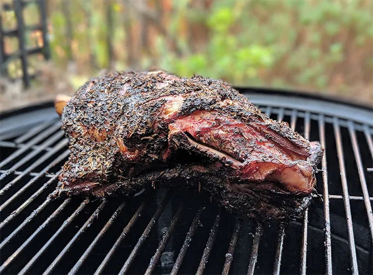

Smoked Lamb Shoulder

Description
This smoked lamb shoulder recipe is a great way to mix up your typical barbecue.
I decided to add a Mediterranean twist and served the lamb on warmed pita bread with hummus. But if you can’t
get your hands on that you can’t go wrong serving it on white bread with your favorite barbecue sauce.
Ingredients
- 1 4-8Lb Lamb shoulder
- 2 Tbsp Olive oil
Steps
- Prepare smoker for indirect cooking at 250°F using a neutral wood like apple, cherry or pecan
- Mix rub ingredients together in a mixing bowl and set aside
- Coat lamb shoulder in olive oil
- Sprinkle salt over lamb evenly
- Sprinkle salt over lamb evenly
- Apply herb rub to lamb making sure to cover it evenly
- Place seasoned lamb shoulder fat side up on pre-heated smoker
- Smoke lamb shoulder for 4 hours between 250° – 300°F
- For the final hour increase heat to 300° – 325°F to make sure the fat renders
- Remove the lamb from the smoker when internal temperature reaches 195° – 203°F , warp in foil and leave to
rest for 10-20 minutes
- Slice / pull lamb and serve with bread and your favorite sauce or dips
Back